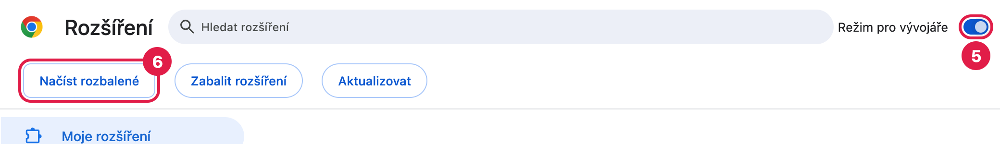
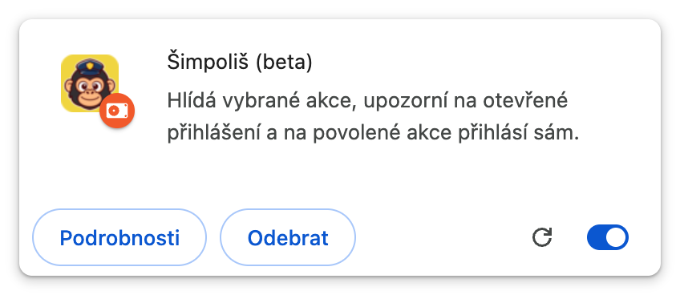
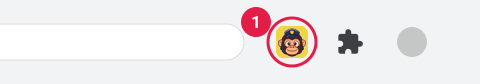
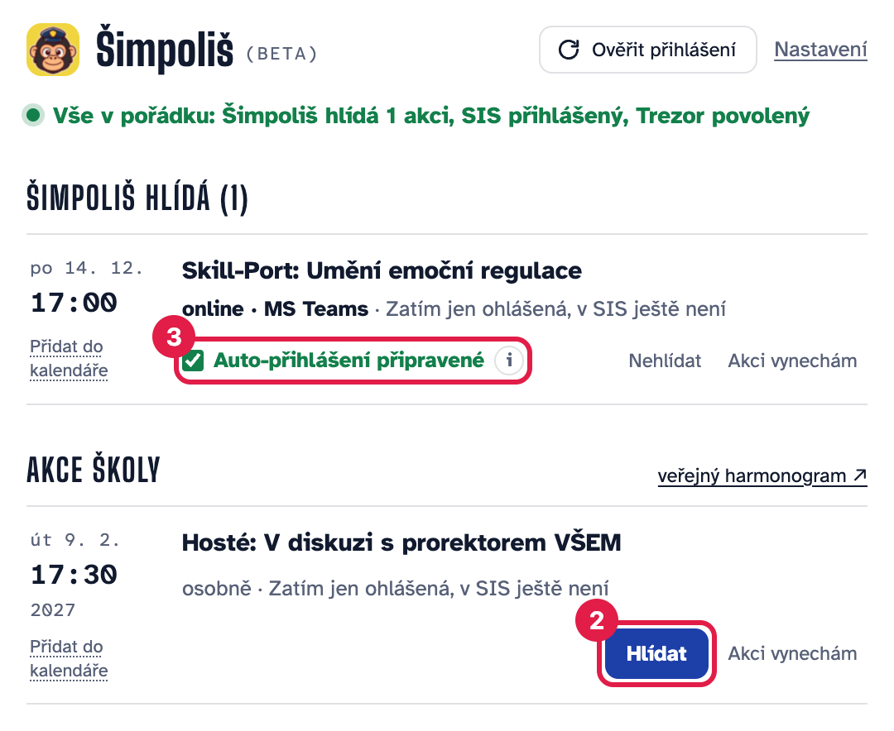

Šimpoliš (beta)
Stáhnout Šimpoliše 0.9.1 (ZIP)
Instalace je jednorázový úkol na pár minut.
Šimpoliš je šimpanz policajt 🐵👮, rozšíření pro Chrome na počítači (Mac i Windows). Funguje i v Edge a Brave. Na mobilu nefunguje.
- Hlídá akce, které si vybereš. Jakmile je možné se přihlásit, dá ti vědět.
- Umí tě na akci přihlásit automaticky. Potřebuje k tomu spuštěný Chrome, počítač, který nespí, a povolený Trezor. Auto-přihlášení zapne spolu s hlídáním, vypnout si ho můžeš.
- Upozorní tě na nové akce a na čas, kdy se otevře přihlášení. Akce, které tě nezajímají, schováš jedním kliknutím.
- Osobní data nesdílí. Heslo a přihlášení do SIS neopustí tvůj počítač. Hlídané akce se přenesou jen na tvoje spárované počítače, a to zašifrované.
Instalace #
Šimpoliš není v Chrome Web Store, instaluje se ze ZIPu.
Krok 1: stáhni ZIP. Tlačítko Stáhnout Šimpoliše je nahoře na stránce s návodem. Soubor se uloží do složky Stažené soubory.
Krok 2: rozbal ho. Na Macu na stažený soubor dvakrát klikni. Ve Windows na něj klikni pravým tlačítkem a zvol Extrahovat vše, pak Extrahovat.
Krok 3: přesuň rozbalenou složku Simpolis do Dokumentů. Chrome si Šimpoliše načítá odtud, takže ji nepřejmenovávej ani nemaž. Přesun do iCloud Drive popisuje část Víc počítačů.
Krok 4: otevři v Chromu stránku Rozšíření. Napiš do adresního řádku chrome://extensions a stiskni Enter.
Krok 5: zapni Režim pro vývojáře. Přepínač je vpravo nahoře.
Krok 6: klikni na Načíst rozbalené a vyber složku Simpolis v Dokumentech.

Načteno: v seznamu rozšíření uvidíš kartu Šimpoliše se zapnutým modrým přepínačem.

Krok 7: klikni na dílek skládačky vpravo od adresního řádku.
Krok 8: klikni na špendlík u Šimpoliše. Šimpanz pak zůstane v liště po ruce.

Po instalaci se otevře Nastavení s krátkým úvodem.
Jak začít:
- Přihlas se do SIS v tomhle Chromu.
- Klikni na šimpanze vpravo nahoře a u akce zvol Hlídat.
- Nastav si notifikace podle části Notifikace níže, aby ti akce neutekla.
Aktualizace #
Kdy aktualizovat, ti Šimpoliš řekne. Drobné úpravy vycházejí potichu. Upozorní jen na verzi, která za to stojí: v okně šimpanze se objeví modrý pruh a přijde notifikace.
- Stáhni nový ZIP tlačítkem nahoře na stránce a rozbal ho jako při instalaci.
- Přetáhni novou složku
Simpolisdo Dokumentů a zvol Nahradit. - Počkej minutu. Šimpoliš si novou verzi načte automaticky. Kdyby ne, klikni na stránce Rozšíření u Šimpoliše na kruhovou šipku.
- Povol Trezor, pokud ho používáš. Po aktualizaci je vypnutý.
Hlídané akce i Trezor zůstanou. Rozšíření kvůli aktualizaci neodebírej, to by smazalo všechno.
Výjimka: přechod na verzi 0.8.0. Šimpoliš od ní má na všech počítačích stejné ID. Chrome ho proto jednou načte jako nové rozšíření a předchozí nastavení zmizí:
- Hlídané akce zvol znovu tlačítkem Hlídat, u každé zkontroluj auto-přihlášení.
- Skryté akce znovu schovej tlačítkem Akci vynechám.
- Trezor založ znovu v Nastavení. Heslo do SIS i hlavní heslo zadáš jako poprvé.
- Stará karta: kdyby v
chrome://extensionszůstala druhá karta Šimpoliše s chybou, odeber ji.
Když neaktualizuješ, stará verze hlídá dál. Jen při vážné chybě nebo po konci projektu ji autor na dálku vypne: přestane hlídat a v okně šimpanze uvidíš červené upozornění s důvodem.
Kterou verzi máš, vidíš v hlavičce okna Šimpoliše vedle (beta).
Notifikace #
Notifikace jsou nepovinné, ale doporučené. Šimpoliš funguje i bez nich:
- Ikona šimpanze v liště ukáže, co se děje. Modrá s číslem znamená otevřené přihlášení, červená, že je potřeba tvůj krok.
- Automatické přihlášení funguje i bez notifikací.
- S notifikacemi se o otevřeném přihlášení dozvíš hned, i když se na lištu zrovna nedíváš.
Mac
- Otevři Nastavení systému, pak Oznámení, pak Google Chrome.
- Zapni Povolit oznámení.
- Nastav styl na Upozornění (v novějším macOS Trvalé). Jinak notifikace za pár sekund zmizí.
Windows
- Otevři Nastavení, pak Systém, pak Oznámení.
- Zapni oznámení pro Google Chrome.
- Vypni režim Nerušit, nebo do výjimek přidej Google Chrome.
Víc počítačů #
Hlídané a skryté akce můžeš mít stejné na všech svých počítačích. Stačí je jednou spárovat:
- Na prvním počítači otevři Nastavení Šimpoliše a v části Víc počítačů klikni na Spárovat můj další počítač. Šimpoliš ukáže kód.
- Na druhém počítači otevři Nastavení Šimpoliše a kód vlož do pole Mám kód z jiného počítače, pak klikni na Spárovat.
Změny se pak přenesou do 5 minut. Trezor se nepřenáší, na každém počítači ho založ zvlášť.
Složka v iCloud Drive (jen Mac). Složku Simpolis můžeš dát do iCloud Drive. Nová verze, kterou do ní nahraješ, se pak dostane na všechny tvoje Macy. Když máš v iCloudu zapnuté Plochu a Dokumenty, složka Dokumenty/Simpolis už v iCloud Drive je a krok 1 přeskoč.
- Přesuň složku
Simpolisve Finderu z Dokumentů do iCloud Drive. - Klikni na ni pravým tlačítkem a zvol Vždy ponechat na tomto Macu. Jinak by macOS soubory z disku uvolnil a Chrome by je nenašel.
- Otevři
chrome://extensions, klikni na Načíst rozbalené a vyber složkuSimpolisv iCloud Drive. Šimpoliš je pořád stejný, nastavení i Trezor mu zůstanou.
Na dalším Macu počkej, až se složka v iCloud Drive objeví, udělej krok 2 a pak krok 4 až 8 z instalace se složkou v iCloud Drive.
Co musí platit, aby hlídal #
- Chrome běží.
- Počítač nespí. Když počítač uspíš, Šimpoliš usne taky.
- Jsi v Chromu přihlášený do SIS nebo máš povolený Trezor (viz níže).
Jak na tom Šimpoliš je, ověříš v okně šimpanze tlačítkem Ověřit přihlášení. U řádku bez zelené fajfky je odkaz, kde to spravíš: Přihlásit do SIS, Povolit Trezor, nebo Nastavení, kde Trezor založíš.
Jak hlídat akci #
- Klikni na šimpanze vpravo nahoře v liště Chromu. Otevře se okno Šimpoliše.
- U akce zvol Hlídat. Šimpoliš tím rovnou zapne i „Auto-přihlášení na akci“: hlídkuje, a jakmile se přihlášení otevře, zkusí tě na akci přihlásit automaticky.
- Zelené „Auto-přihlášení připravené“ znamená, že jsi přihlášený v SIS a máš povolený Trezor. Když poběží Chrome a počítač nebude spát, Šimpoliš tě pak zkusí přihlásit, i když u počítače zrovna nejsi.
- Nechceš, aby tě přihlásil automaticky? U hlídané akce odškrtni „Auto-přihlášení na akci“. Šimpoliš tě pak jen upozorní, že se přihlašování otevřelo.


Akce, na kterou jsi přihlášený, se přesune do sekce Přihlášeno. Šimpoliš to pozná i tehdy, když se přihlásíš ručně nebo z jiného počítače: podívá se do tvého Administrativního přehledu studenta v SIS. Odhlásit se z ní můžeš jen v SIS, odkaz Odhlásit se v SIS tě pošle rovnou do tvého přehledu. Šimpoliš to pozná a vrátí akci mezi hlídané s vypnutým auto-přihlášením, takže tě znovu nepřihlásí.
Hlídání zrušíš tlačítkem Nehlídat, akce se vrátí do seznamu. Akci, kterou nechceš vůbec, schováš tlačítkem Akci vynechám. Když se spleteš, najdeš ji dole v sekci Skryté akce a vrátíš tlačítkem Vrátit.
Přidat do kalendáře najdeš u každé akce pod datem. Vybereš Akce, nebo Připomínka přihlášení. Připomínka je jen záznam v tvém kalendáři na chvíli, kdy se v SIS otevře přihlášení. Přihlásit se pak musíš v SIS ručně. Automaticky tě Šimpoliš zkusí přihlásit jen na akci, kterou hlídá s auto-přihlášením, a jen když poběží Chrome, počítač nebude spát a budeš mít povolený Trezor. Tlačítko Připomínka do kalendáře je i v notifikaci, která přijde, jakmile SIS čas otevření přihlášení ukáže.
Akce ze SIS, které nejsou ve veřejném harmonogramu, jsou ve sbalené sekci Další akce v SIS. Často jde o povinné semináře a praktické aplikace.
Pravidla automatického přihlášení #
- Jen na akce, které sis vybral a u kterých je zaškrtnuté „Auto-přihlášení na akci“.
- U akcí mimo Skill-Port a Hosté VŠEM se nejdřív zeptá. Až akci najde v SIS, ukáže přesný název a ty potvrdíš, že je to ona.
- Jeden pokus na akci. Když se něco pokazí, dá vědět a víc nezkouší. Tlačítko Zkusit znovu pokus povolí znovu.
- Nikdy tě neodhlásí.
Barvy #
Barva má význam jen u stavu nahoře v okně šimpanze a u ikony šimpanze v liště.
| Barva | Co znamená |
|---|---|
| 🔴 červený rámeček | Bez tebe Šimpoliš nefunguje. Třeba máš povolit Trezor nebo se přihlásit do SIS. |
| 🔵 modrý rámeček | Šimpoliš čeká na tvé rozhodnutí. Třeba se otevřelo přihlášení, nebo máš potvrdit akci. |
| 🟢 zelený text | Všechno je v pořádku. |
- Ikona v liště: v klidu je žlutá, při otevřeném přihlášení modrá s číslem, a když je potřeba tvůj krok, červená.
- Modrá tlačítka jako Hlídat nebo Otevřít SIS jen ukazují, kam kliknout.
Trezor (nepovinný, ale doporučený) #
SIS automaticky odhlašuje a Šimpoliš tě pak upozorní, že se máš přihlásit. Díky trezoru se Šimpoliš zvládne přihlásit do SISu automaticky, a tím i na hlídanou akci.
Pracuješ se dvěma hesly:
- Heslo do SIS uložíš do trezoru jednou a pak už ho nezadáváš.
- Hlavní heslo trezoru je jiné heslo, které si vymyslíš (aspoň 8 znaků). Nepoužívej ho nikde jinde.
Další pravidla:
- Založení: v Nastavení vyplň jméno a heslo do SIS a pak dvakrát nové hlavní heslo trezoru.
- Po restartu Chromu je Trezor vypnutý. Povolíš ho hlavním heslem.
- Když automatické přihlášení z trezoru selže, víckrát to nezkouší, aby ti nezablokoval účet, a toto přihlašování vypne. Přihlas se do SIS ručně, pak Trezor vypni a znovu povol.
- Heslo do SIS je uložené zašifrované v prohlížeči. Klíč vzniká z hlavního hesla a na disk se neukládá.
- Klíč povoleného Trezoru žije jen v paměti Chromu. Zavřením prohlížeče zmizí a Trezor se vypne.
- Heslo odchází jen přes HTTPS na přihlašovací stránku školy. Kdyby formulář mířil jinam, Šimpoliš ho neodešle.
- Smazání: v Nastavení v části Trezor klikni na Smazat trezor a potvrď Ano, smazat.
- Hlavní heslo trezoru nejde obnovit. Když ho zapomeneš, trezor smaž a založ znovu. Do SIS se tím nic nemění.
- Změnil jsi heslo do SIS? Trezor smaž a založ znovu.
Co Šimpoliš sdílí #
Šimpoliši různých uživatelů si předávají seznam akcí z webu školy a SISu.
- Co odchází: názvy, popisy a termíny akcí, kdy se na ně dá přihlásit a jakou mají kapacitu. Stejné údaje vidí v SIS každý student.
- Co nikdy neodchází: tvoje jméno, heslo, studijní číslo, trezor, akce, na které jsi přihlášený, ani akce, které hlídáš nebo které tě nezajímají.
- Kam: do skriptu Google Apps Script na účtu autora Šimpoliše. Ten seznam uloží na Google Disk autora a zveřejní ho jako veřejný katalog akcí. Seznam od ostatních si Šimpoliš stahuje ze stejného skriptu.
- Bez identifikace: Šimpoliš k seznamu nepřikládá tvůj Google účet ani přihlášení do SIS. Google jako provozovatel skriptu vidí jen tvou IP adresu, stejně jako u každé webové stránky.
- Spárované počítače: když počítače spáruješ, hlídané a skryté akce a volba ranní zprávy jdou zašifrované klíčem z párovacího kódu do stejného skriptu. Skript ani autor Šimpoliše je bez kódu nepřečtou. Heslo do SIS ani Trezor se nepřenáší.
- Kontrola nové verze: jednou za 6 hodin si Šimpoliš stáhne z webu návodu malý soubor s číslem nejnovější verze. Nic přitom neodesílá.
- Žádná statistika. Šimpoliš nesleduje, jak ho používáš.
Jak často se vše kontroluje #
Jen tak často, jak je potřeba:
- Když nehlídáš žádnou akci: sleduje novinky na webu školy každou hodinu.
- Akce je za více než 14 dní: hlídá jednou za 10 minut.
- Akce se blíží: hlídá přihlášení každou minutu, v noci mezi 21 a 6 h jednou za 5 minut.
- Když tě SIS odhlásí: zkouší to každých 10 minut. Rychlejší je tlačítko Přihlásit do SIS v okně Šimpoliše: otevře SIS a jakmile se přihlásíš, Šimpoliš to do pár sekund ověří.
Ranní zpráva: Šimpoliš ti každé ráno v 8:00 pošle notifikaci, že hlídá. Vypnout ji můžeš v Nastavení v části Kontroly.
Novinky
Verze 0.9.1
- Ověřit přihlášení ukáže i to, že je počítač spárovaný. Výsledek je přehledně ve dvou sloupcích.
- Šimpoliš na novém počítači nabídne spárování s tím, kde už ho máš.
Starší verze
Verze 0.9.0
- Hlídané akce můžeš mít stejné na všech svých počítačích. Stačí je spárovat v části Víc počítačů.
- Tlačítko Ověřit přihlášení svítí žlutě, dokud není všechno v pořádku.
- Tady v Nastavení přibyl přehled novinek.
Verze 0.8.2
- Šimpoliš pozná, že jsi na akci přihlášený, i když ses přihlásil ručně nebo z jiného počítače.
- Odkaz Odhlásit se v SIS vede rovnou do tvého přehledu v SIS.
- U výsledku Ověřit přihlášení je odkaz, kde co spravíš.
- Po kliknutí na Přihlásit do SIS Šimpoliš hned pozná, že ses přihlásil.
- V hlavičce okna vidíš, kterou verzi máš.